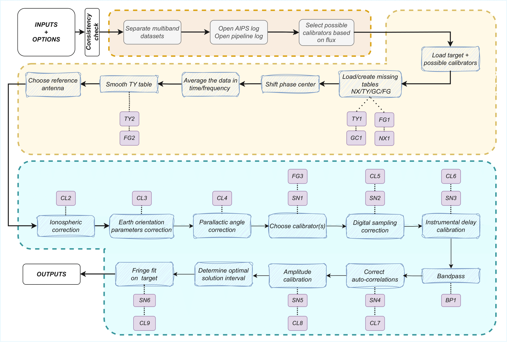

AIPS Calibration Workflow
In this section, we provide a detailed description of the AIPS tasks used throughout the pipeline, along with their most relevant parameters. For the scientific motivation behind this workflow, please refer to Alvarez-Ortega et al. (2025).
{kind=link}
Data loading
After splitting in frequencies and selecting multiple potential calibrators, data are loaded into AIPS using FITLD:
task 'FITLD' outname # Project name outdisk outclass # The loaded frequency, i.e. 22G for K band data outseq 1 sources # Science targets + potential calibrators bif # Depending on frequency loaded eif # Depending on frequency loaded clint 0.1 # CL entry interval in minutes selfreq # Depending on frequency loaded fqtol # 0.5% of selfreq
If more than 1 file is loaded, redundant calibration tables are merged with TAMRG
# GC tables task 'TAMRG' inext 'GC' aparm 1 1 2 1 3 1 bparm 1 2 3 invers 1 outvers 1# TY tables task 'TAMRG' inext 'TY' aparm 1 1 4 1 5 1 6 1 bparm 1 3 4 5 6 cparm 0.1/(24*60*60) # Tolerance for timestamps, 0.1s invers 1 outvers 1# PC tables task 'TAMRG' inext 'PC' aparm 1 1 4 1 5 1 6 1 bparm 1 3 4 5 6 cparm 0.1/(24*60*60) # Tolerance for timestamps, 0.1s invers 1 outvers 1
Pre-calibration checks
If the loaded data not in time-baseline (TB) order, they are sorted with UVSRT
task 'UVSRT' sort 'TB'
If there is not an index table (NX) or an intial calibration table (CL1), they are created with INDXR
task 'INDXR' cparm(3) 0.1 # CL entry interval in minutes cparm(4) 4 # Recalculate CL group delays if IM table is available
Table loading
When system temperatures (TY1), gain curves (GC1), or initial flag tables (FG1) are not available in the data, they are retrieved online and loaded using ANTAB
task 'ANTAB' tyver 1 gcver 1 calin # Tsys or GC file
or UVFLG in case of the initial flag table
task 'UVFLG' intext # Flag file
When the dataset has been observed with the VLBA and the calibration tables have been generated with the TSM software, the pipeline uses the VLOG task to extract the information
task 'VLOG' calin # cal.vlba file outfile # Path for the extracted tables in ANTAB format
If there are non-ASCII characters in the antenna table (AN), these are replace with the correct values. This is done to avoid issues with ParselTongue, and the TABED task can be used for this purpose
# For antenna names task 'TABED' inext 'AN' invers 1 outvers 1 optype 'REPL' aparm(1) # Column to modify, 1 for ant names, 9 for pol names aparm(2) 0 # First character to modify aparm(3) 0 # Last character to modify aparm(4) 3 # String type bcount # Iterate over all rows one by one ecount # Same row as bcount keystrng # Correct names, extracted from the fits file# For polarization names task 'TABED' inext 'AN' invers 1 outvers 1 optype 'REPL' aparm(1) 9 # Column to modify, antenna names are 1 aparm(2) 0 # First character to modify aparm(3) 0 # Last character to modify aparm(4) 3 # String type bcount # Iterate over all rows one by one ecount # Same row as bcount keystrng # Correct antenna names, extracted from the fits file
Phase center shift
If specified by the user, VIPCALs can shift the correlation phase center of a source. It can be done through the UVFIX task, going from the old coordinates RA, DEC, to the new ones RA’, DEC’.
task 'UVFIX' srcname # Target to shift shift # shift_1, shift_2
where shift_1 = cos(DEC) * (RA’ - RA), and shift_2 = (DEC’ - DEC).
Time/frequency average
To improve the signal-to-noise ratio while still preserving coherence, VIPCALs can apply both a time and frequency average. By default, if the time sampling is shorter than 1s, data are averaged in 2s bins with UVAVG
# GC tables task 'UVAVG' doacor 1 # Keep autocorrelations yinc 2 # Final sampling time, can be changed zinc # Original sampling time opcode 'TIME'
In frequency, the pipeline will run AVSPC by default if the channel width is narrower than 0.5MHz.
# GC tables task 'UVAVG' doacor 1 # Keep autocorrelations channel # Ratio old_channels/new_channels avoption 'SUBS'
After this steps, the scan list is printed with LISTR into a text file in the output folder
task 'LISTR' optype 'SCAN' flagver 1 xinc 1 # Display all lines docrt -2 # Print to external file
TY table smoothing
System temperatures are filtered and smoothed using TYSMO. Default criteria are to flag temperatures below 0K, over 1500K, and that deviate more than 250K from the mean of a given source
task 'TYSMO' invers 1 outvers 2 inext 'TY' dobetween 0 # Smooth each source individually aparm(1) 0 # Minimim temperature aparm(6) 1500 # Maximum temperature cparm(1) 15 # Time interval in which the mean is computed cparm(6) 250 # Maximum deviation allowed with respect to the mean
Antennas with no TY or GC tables at this stage, or where all Tsys values have been flagged, are flagged in FG2 using UVFLG. First, FG1 is copied into FG2 using TACOP.
# Copy the table task 'TACOP' inext 'FG' invers 1 outvers 2# Flag the antennas task 'UVFLG' antennas # Antennas with no TY or GC outfgver 2 reason 'NO TSYS/GC'
TSys tables, both original and smoothed, are plotted with SNPLT
task 'SNPLT' inext 'TY' optype 'TSYS' invers # 1 or 2 nplots 8 dotv -1
and then printed to a PostScript file with LWPLA
task 'LWPLA' dparm 0 0 0 0 0 4 31 7 0 # Plotting parameters
Choice of reference antenna
A fringe fit with FRING is run on a selected number of scans, rotating around all possible reference antennas. This allows the pipeline to assign a fringe S/N to each antenna.
task 'FRING' refant # Rotates around antennas docalib 1 # Use calibrated data gainuse 1 solint # Scan length timeran # Scan time aparm(1) 2 # Min. number of antennas for a solution aparm(5) 0 # Solve IFs separately aparm(6) 2 # Amount of information printed aparm(7) 1 # No S/N cutoff dparm(1) 1 # Number of baseline combinations dparm(2) 1000 # Delay window in ns dparm(3) 200 # Rate window in mHz dparm(5) 1 # Stop at the FFT stage
This is run on a selected number of scans per each antenna, and each antenna gets all the solution tables merged into one. It is done with CLCAL.
task 'CLCAL' opcode 'MERG' snver # First SN table of the antenna invers # Last SN table of the antenna refant # Each antenna
Only the merged table is kept, the rest are deleted.
Ionospheric delay correction
Data observed after June 1998 are corrected for ionospheric delays. This is done with TECOR. Files are obtained from NASA
task 'TECOR' infile # Depends on the date nfiles # Number of days observed aparm(1) 1 # Correct for dispersive delays gainver 1 # From CL1 gainuse 2 # To CL2
The IONEX file used is infile is codgDDD0.YYi for observations older than GPS Week 2238 (26/11/2022), and COD0OPSFINYYYYDDD0000_01D_01H_GIM.INX for newer observations. DDD, YY, and YYYY refer to the day, 2-digit year, and 4-digit year of the observation.
Files older than June 1998 simply get their CL1 copied into CL2 with TACOP.
Geometric corrections
Earth orientation parameters and parallactic angle are corrected for with CLCOR.
# EOPS task 'CLCOR' opcode 'EOPS' clcorprm 3 7 # Consider data from +- 3 days infile # usno_finals_bis.erp provided by the USNO gainver 2 # From CL2 gainuse 3 # To CL3# Parallactic angle task 'CLCOR' opcode 'PANG' clcorprm 1 0 # Add corrections gainver 3 # From CL3 gainuse 4 # To CL4
Choice of calibrator scans
The pipeline uses FRING to rank each scan based on its fringe S/N
task 'FRING' refant # Reference antenna docalib 1 # Use calibrated data gainuse 4 # Use CL4 solint # Scan length aparm(1) 2 # Min. number of antennas for a solution aparm(5) 0 # Solve IFs separately aparm(6) 2 # Amount of information printed aparm(7) 5 # S/N threshold aparm(9) 1 # Use other antennas as backup reference antennas search # Prioritized list of antennas to use dparm(1) 1 # Number of baseline combinations dparm(2) 1000 # Delay window in ns dparm(3) 200 # Rate window in mHz dparm(5) 1 # Stop at the FFT stage snver 1 # Produce SN1
If, for a certain antenna, there are no scans with S/N greater than 5, then that antenna is flagged in FG3 using UVFLG
task 'UVFLG' antennas # Antennas with no reliable calibrators outfgver 3 reason 'NO CALIB'
Digital sampling correction
Autocorrelations are normalized using the ACCOR, with corrections being applied with CLCAL
task 'ACCOR' solint -3 # Solution interval of 3 minutes, respecting scan boundariestask 'CLCAL' opcode 'CALP' interpol 'SELF' snver 2 gainver 4 # From CL4 gainuse 5 # To CL5
Instrumental delay correction
FRING is run for each of the calibrator scans selected previously.
task 'FRING' refant # Reference antenna docalib 1 # Use calibrated data gainuse 5 # Use CL5 solint # Scan length calsour # Calibrator source timerang # Scan interval antennas # refant + antennas to be calibrated aparm(1) 2 # Min. number of antennas for a solution aparm(5) 0 # Solve IFs separately aparm(6) 2 # Amount of information printed aparm(7) 5 # S/N threshold aparm(9) 1 # Use other antennas as backup reference antennas search # Prioritized list of antennas to use dparm(1) 1 # Number of baseline combinations dparm(2) 1000 # Delay window in ns dparm(3) 200 # Rate window in mHz dparm(8) 1 # Zero the rated after fitting snver 3 # Produce SN3
If there is more than one calibrator scan, merge the solutions with CLCAL
task 'CLCAL' opcode 'MERG' snver 3 invers 3+n refant # Reference antenna
And apply the solutions with CLCAL
task 'CLCAL' opcode 'CALP' interpol '2PT' snver # Merged SN table gainver 5 # From CL5 gainuse 6 # To CL6
If there were multiple calibrator scans, the individual tables are removed and the merged table is copied to SN3.
Complex bandpass
Bandpass is corrected with BPASS
task 'BPASS' solint -3 # Solution interval respecting scan boundaries refant # Reference antenna calsour # Calibrator sources docalib 1 # Use calibrated data gainuse 6 # Use CL6 outvers 1 # Produce BP1 solint -1 # Scan length weightit 1 # Weight data by 1/sigma bpassparm(5) 0 # Divide by channel zero (central 75% of the IF) bpassparm(9) 1 # Interpolate over flagged channels # If only one calibrator scan is used: timerang # Time interval of the scan bpassparm(10) 6 # Shift the average phase to 0
After the bandpass corrections, normalize again the autocorrelations with ACSCL. Solutions are applied with CLCAL.
task 'ACSCL' solint -3 # Solution interval respecting scan boundaries docalib 1 # Use calibrated data gainuse 6 doband 1 # Apply bandpass correctiontask 'CLCAL' opcode 'CALP' interpol 'SELF' snver 4 gainver 6 # From CL6 gainuse 7 # To CL7
Amplitude calibration
Final amplitude calibration is computed with APCAL and applied with CLCAL
task 'APCAL' solint -3 # Solution interval respecting scan boundariestask 'CLCAL' opcode 'CALP' interpol 'SELF' snver 5 gainver 7 # From CL7 gainuse 8 # To CL8
Target fringe fit
Before running the final fringe fit, the solution interval is optimized by running a fringe fit in a reduced set of target scans.
task 'FRING' refant # Reference antenna calsour # Science target or phase-reference calibrator solint # Rotates between 5, 4, 3, 2, and 1 solutions per scan docalib 1 # Use calibrated data gainuse 8 # Use CL8 doband 1 # Apply the bandpass correction aparm(1) 2 # Min. number of antennas for a solution aparm(5) 0 # Solve IFs separately aparm(6) 2 # Amount of information printed aparm(7) 1 # No S/N threshold aparm(9) 1 # Use other antennas as backup reference antennas search # Prioritized list of antennas to use dparm(1) 1 # Number of baseline combinations dparm(2) 1000 # Delay window in ns dparm(3) 200 # Rate window in mHz dparm(5) 1 # Stop at the FFT stage
Finally, fringe fit on target (or phase reference source) to correct for residual delay and rates
task 'FRING' refant # Reference antenna calsour # Science target or phase-reference calibrator solint # Optimal solution interval docalib 1 # Use calibrated data gainuse 8 # Use CL8 doband 1 # Apply the bandpass correction aparm(1) 2 # Min. number of antennas for a solution # On a first round aparm(5) 0 # Solve IFs separately # On a second round aparm(5) 1 # Solve IFs together aparm(6) 2 # Amount of information printed aparm(7) # S/N cutodd, default is 5 aparm(9) 1 # Use other antennas as backup reference antennas search # Prioritized list of antennas to use dparm(1) 1 # Number of baseline combinations dparm(2) 1000 # Delay window in ns dparm(3) 200 # Rate window in mHz
Solutions are applied with CLCAL
# If the fringe fit is on the science target task 'CLCAL' opcode 'CALP' interpol 'SELF' cutoff # 1.1*scan_length, interpolate solutions only within the scan gainver 8 # From CL8 gainuse 9 # To CL9# If the fringe fit is on the phase-reference calibrator task 'CLCAL' sources # Science target opcode 'CALP' interpol '2PT' gainver 8 # From CL8 gainuse 9 # To CL9
Data export
Calibration, flags, and bandpass corrections are applied with SPLIT. Final calibrated data are exported to a uvfits with FITTP
task 'SPLIT' sources # Science_target docalib 1 # Use calibrated data gainuse 9 # Use CL9 doband 1 # Do bandpass fgver 3 # Use the last FG table # If channel_out == 'SINGLE' aparm(1) 2 # If channel_out == 'MULTI' aparm(1) 1 bchan # Initial channel to calibrate, by default 1 echan # Final channel to calibrate, by default the lasttask 'FITTP' dataout '/output_folder/sourcename_project_band_date/sourcename_project_band_date.uvfits
Plots
PostScript format plots are produced from AIPS using different tasks.
For amplitude and phase as a function of frequency, both uncalibrated and calibrated, POSSM is used.
task 'POSSM' sources # Science target stokes 'RRLL' solint -1 # Scan length docalib 1 # Use calibrated data gainuse # 1 for the uncalibrated, 9 for the calibrated flagver # 1 for the uncalibrated, 3 for the calibrated doband # 0 for the uncalibrated, 1 for the calibrated bchan # Initial channel to calibrate, by default 1 echan # Final channel to calibrate, by default the last # Plotting options aparm 1 1 0 0 -180 180 0 0 1 0 nplots 9 dotv -1
For calibrated amplitudes and phases as a function of time, the pipeline uses VPLOT
task 'VPLOT' sources # Science target avgchan 1 # Average channels avgif 1 # Average channels solint 0.09 # One point every 5 seconds docalib 1 # Use calibrated data gainuse 9 # Use CL9 flagver 3 # Use FG3 doband 1 # Correct for bandpass bchan # Initial channel to calibrate, by default 1 echan # Final channel to calibrate, by default the last # Plotting options bparm 12 -1 0 nplots 2 dotv -1
For the uv coverage, the pipeline uses UVPLT
task 'UVPLT' sources # Science target stokes 'RRLL' solint 0.09 # One point every 10 seconds docalib 1 # Use calibrated data gainuse 9 # Use CL9 flagver 3 # Use FG3 doband 1 # Correct for bandpass bchan # Initial channel to calibrate, by default 1 echan # Final channel to calibrate, by default the last # Plotting options bparm 6 7 2 0 do3color -1 dotv -1
Finally, all these plots are printed into PostScript files using LWPLA
task 'LWPLA' # Plotting options dparm 0 0 0 0 0 4 31 7 0